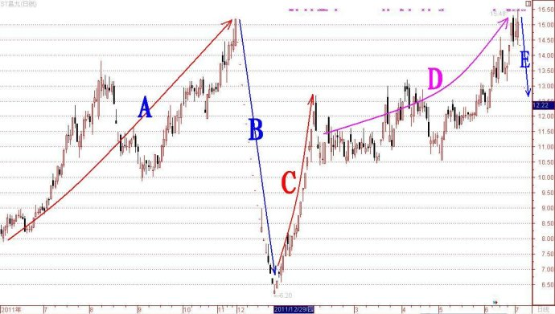

第203篇•教你炒股系列57:主升浪的形态（8）
谷为陵
案例2：“超跌+不确定的公开性利好传闻”反弹型主升浪案例——ST昌九
自去年6月以来，ST昌九就因赣州稀土借壳一事闹得沸沸扬扬，其股价也如坐了过山车一般，来来回回闹了好几轮暴涨暴跌。其中，最引人注目的是在去年12月，该股因传闻赣州稀土将放弃ST昌九，而使该股股价出现极为惨烈的暴跌，在短短的一个月内，股价就从15.18元跌到6.2元，跌幅高达60%!期间，令人瞠目的是，该股在这轮暴跌中的18个交易日里，竟然出现了15个5%的跌停板，这样凌厉的雪崩式跌势实属罕见。但令人更为震惊的还在后面。在该股刚刚崩盘后，其股价马上就犹如火箭一样开始了反向的飞升！在短短的20个交易日内，该股又走出了10个5%的涨停板，股价从6.2元又涨回到12.6元，接近翻倍。至7月3日，该股股价更是创出了自2004年以来的最高价15.48元。然而，自7月5日，因赣州稀土已经明确将借壳ST宏盛上市，ST昌九终于成为了弃儿，于是ST昌九又开始了新的一轮跌停板跳水表演。
下面是该股的K线走势图：

我在上图中标记了5根趋势线，其中，红色A线是因赣州稀土借壳ST昌九而走出的一轮上涨行情；蓝色B线是因传出赣州稀土将放弃借壳ST昌九而出现的一轮暴跌；红色C线是该股股价在暴跌后出现的一轮报复性反弹，并形成了一轮连续“大阳线涨停板”型主升浪；粉色D线是因赣州稀土还可能借壳ST昌九的传闻在继续发酵，从而引发的一轮投机性的上涨行情;
蓝色E线是因赣州稀土正式放弃借壳ST昌九而出现的新一轮暴跌。
从ST昌九的暴涨暴跌走势，我们会得到什么启示呢？我认为应该有三方面的启示：
第一，对于ST类的绩差股，当它们在不确定的重大利好传闻刺激下，股价出现大涨而远远超出其基本价值时（这正如ST昌九的红色A线那段的走势），对于稳健的投资者来说，不应该以赌博的心态进场“博傻”。越是利好信息传得凶的，股价涨幅大的股票，一旦传闻不实，那么，股价跌幅将越大，根本逃不出去。之所以会出现这样的情况，是因为这类绩差股的基本面根本不足以支撑这么高的股价，一旦利好破灭，股价自然要回归其应有价值区间。这与基本面好的股票，或者前期涨幅小的股票的利好传闻破灭的情况，是很不相同的，那些股票就算是利好破灭，股价也难以深跌。
第二，当这类股票因“重大利好传闻”出现破灭的“传闻”而致股价暴跌后（如上图中的蓝色B线），反而可能是一个短线抄底的机会（如上图中的红色C线）。因为，既然“重大利好”没有通过正式渠道或者通过公告取消、澄清，那么，这个“重大利好”就会阴魂不散，还会悬在那里继续起作用，特别是在股价经过暴跌后，对于股价的报复性反弹起很重要的作用。本来，对于任何股票来说，经过像ST昌九这样的直线型的暴跌，股价在短期内都应有反弹的要求，只不过因有无题材而致反弹的高度有所不同。在本案中，当ST昌九股价跌到6元多是，其稀土题材还无最终的定论，所以，其股价反弹的高度就出人意料地大。
从现在来看，该股之所以会在赣州稀土放弃借壳这则消息没有正式公告前出现暴跌，完全是庄家和内幕人士所为。因为，从现在掌握的情况看，赣州稀土放弃借壳ST昌九一事，确实是在去年12月就定下来了，只不过这个消息只是被庄家和内幕人士率先掌握了，普通投资者并不知情。但庄家和内幕人士却极为受惊，他们怕这个信息传开后就没有逃命的机会了，于是他们先开始了夺路而逃，从而引发了该股的崩盘式暴跌。但股市往往会和人开玩笑，有时候会出现知情人赚不到钱，而不知内情的人反而大赚的奇特现象。这就是一个活生生的例子。待到ST昌九的庄家和内幕人士将股价砸到深渊后，那些不知情的“莽汉们”反而进场将股价横扫，让股价再次创出新高，这让那些在低位割肉出局的庄家和内幕人士们，情何以堪！
我认为，不管从哪个角度进行分析，那些敢于在ST昌九股价由15元暴跌到6元多进场扫货的人，绝对是股市的短线高手。因为这时候进场，时机绝好，没有任何风险——若利好消息还存在，那么，股价日后必会暴涨；若利好消息最终确认不存在，但在消息并不明朗的当下，却还是可借此朦胧利好抄一把反弹的。
第三，在这类股票短期大幅反弹后，就绝不应该再追涨了（如上图中的粉色D线）。因为这类股票是因利好传闻破灭而暴跌的，在经过报复性反弹后，这类股票的短期投机价值已经荡然无存了。除非这类股票的利好兑现，否则，在短期暴涨后，股价又将再次严重脱离了其基本面的支持，一旦利好信息正式公告取消，那么，新的一轮暴跌是不可避免的。这就是我们现在ST昌九看到的一切（如上图中的蓝色E线）。
为什么利好信息不能够在股价“暴涨——暴跌——暴涨”后兑现呢？这是因为，股价的剧烈波动，必会引起管理层的密切关注，在股价大幅波动下的任何资产注入和资产重组行为，都会被更为严格地进行监管，其中，最重要的一项就是查老鼠仓和内幕交易。一旦查出这方面的问题，那么，整个资本运作就会泡汤。若一只股票股价出现暴涨暴跌，谁会保证没有这方面的问题呢？这次赣州稀土放弃借壳ST昌九，其中很重要的原因就是这一点。因为赣州稀土是个香饽饽，上市很容易，它没有必要冒任何风险。现在回过头说句“马后炮”的话，当初要是ST昌九的庄家和内幕人士不那么闹腾，不让股价暴涨暴跌，让股价能够安静一会儿，那么，赣州稀土借壳ST昌九还真有可能成真。但这些庄家和内幕人士为了自己的私利，却毁了一个大局，没办法，这就是资本逐利的本性使然，无可改变。
综上所述，对于因“重大利好传闻”被传不失而致股价暴跌后的股票，只要该股的“重大利好传闻”没有通过正式渠道而取消，那么，在股价暴跌后往往会报复性反弹，这反而是短线机会。这正是我们在ST昌九的上图中看到的B线和C线的情况。有人会问，假若在这类股价暴跌到底部时，“重大利好传闻”正好被正式公告取消了呢？在这种情况下，我认为股价还可能会有反弹，但力度就不会那么大了。
在股价超跌后，因不确定的“公开性”利好而引发的短期暴涨，这方面的案例还有很多。为了将这个问题谈透，我还要再举两个例子：一个是湖南发展（000722），原来的名字叫金果实业；另一个就是大名鼎鼎的重庆啤酒。
（未完待续）